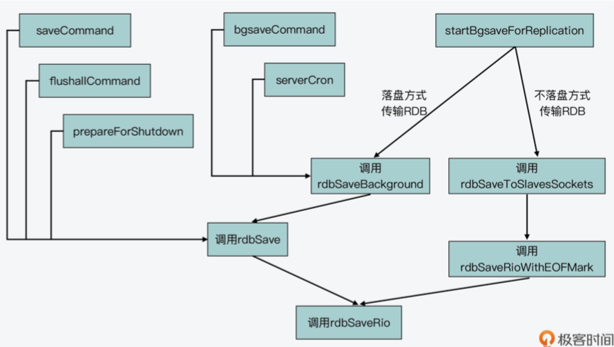

/// 对应了 Redis 的 save 命 令，会在 save 命令的实现函数 saveCommand(在 rdb.c 文件中)中被调用
/* Save the DB on disk. Return C_ERR on error, C_OK on success. */
int rdbSave(char *filename, rdbSaveInfo *rsi) {
char tmpfile[256];
char cwd[MAXPATHLEN]; /* Current working dir path for error messages. */
FILE *fp;
rio rdb;
int error = 0;
snprintf(tmpfile,256,"temp-%d.rdb", (int) getpid());
fp = fopen(tmpfile,"w");
if (!fp) {
char *cwdp = getcwd(cwd,MAXPATHLEN);
serverLog(LL_WARNING,
"Failed opening the RDB file %s (in server root dir %s) "
"for saving: %s",
filename,
cwdp ? cwdp : "unknown",
strerror(errno));
return C_ERR;
}
rioInitWithFile(&rdb,fp);
if (server.rdb_save_incremental_fsync)
rioSetAutoSync(&rdb,REDIS_AUTOSYNC_BYTES);
if (rdbSaveRio(&rdb,&error,RDB_SAVE_NONE,rsi) == C_ERR) {. /// 调用 rdbSaveRio 函数(在 rdb.c 文件中)来实际创建 RDB 文件
errno = error;
goto werr;
}
/* Make sure data will not remain on the OS's output buffers */
if (fflush(fp) == EOF) goto werr;
if (fsync(fileno(fp)) == -1) goto werr;
if (fclose(fp) == EOF) goto werr;
/* Use RENAME to make sure the DB file is changed atomically only
* if the generate DB file is ok. */
if (rename(tmpfile,filename) == -1) {
char *cwdp = getcwd(cwd,MAXPATHLEN);
serverLog(LL_WARNING,
"Error moving temp DB file %s on the final "
"destination %s (in server root dir %s): %s",
tmpfile,
filename,
cwdp ? cwdp : "unknown",
strerror(errno));
unlink(tmpfile);
return C_ERR;
}
serverLog(LL_NOTICE,"DB saved on disk");
server.dirty = 0;
server.lastsave = time(NULL);
server.lastbgsave_status = C_OK;
return C_OK;
werr:
serverLog(LL_WARNING,"Write error saving DB on disk: %s", strerror(errno));
fclose(fp);
unlink(tmpfile);
return C_ERR;
}
/// 对应 了 Redis 的 bgsave 命令，会在 bgsave 命令的实现函数 bgsaveCommand(在 rdb.c 文 件中)中被调用
int rdbSaveBackground(char *filename, rdbSaveInfo *rsi) {
pid_t childpid;
long long start;
if (server.aof_child_pid != -1 || server.rdb_child_pid != -1) return C_ERR;
server.dirty_before_bgsave = server.dirty;
server.lastbgsave_try = time(NULL);
openChildInfoPipe();
start = ustime();
if ((childpid = fork()) == 0) { /// 子进程的代码执行分支
int retval;
/* Child */
closeClildUnusedResourceAfterFork();
redisSetProcTitle("redis-rdb-bgsave");
retval = rdbSave(filename,rsi); /// 调用rdbSave函数创建RDB文件
if (retval == C_OK) {
size_t private_dirty = zmalloc_get_private_dirty(-1);
if (private_dirty) {
serverLog(LL_NOTICE,
"RDB: %zu MB of memory used by copy-on-write",
private_dirty/(1024*1024));
}
server.child_info_data.cow_size = private_dirty;
sendChildInfo(CHILD_INFO_TYPE_RDB);
}
exitFromChild((retval == C_OK) ? 0 : 1); /// 子进程退出
} else {
/* Parent */ //父进程代码执行分支
server.stat_fork_time = ustime()-start;
server.stat_fork_rate = (double) zmalloc_used_memory() * 1000000 / server.stat_fork_time / (1024*1024*1024); /* GB per second. */
latencyAddSampleIfNeeded("fork",server.stat_fork_time/1000);
if (childpid == -1) {
closeChildInfoPipe();
server.lastbgsave_status = C_ERR;
serverLog(LL_WARNING,"Can't save in background: fork: %s",
strerror(errno));
return C_ERR;
}
serverLog(LL_NOTICE,"Background saving started by pid %d",childpid);
server.rdb_save_time_start = time(NULL);
server.rdb_child_pid = childpid;
server.rdb_child_type = RDB_CHILD_TYPE_DISK;
updateDictResizePolicy();
return C_OK;
}
return C_OK; /* unreached */
}
/// 这是 Redis server 在采用不落盘方式传输 RDB 文件进行主从复制时，创建 RDB 文件的入 口函数
/// rdbSaveToSlavesSockets 函数是通过网络以字节流的形式，直接发送 RDB 文件的二进制 数据给从节点。
/* Spawn an RDB child that writes the RDB to the sockets of the slaves
* that are currently in SLAVE_STATE_WAIT_BGSAVE_START state. */
int rdbSaveToSlavesSockets(rdbSaveInfo *rsi) {
int *fds;
uint64_t *clientids;
int numfds;
listNode *ln;
listIter li;
pid_t childpid;
long long start;
int pipefds[2];
if (server.aof_child_pid != -1 || server.rdb_child_pid != -1) return C_ERR;
/* Before to fork, create a pipe that will be used in order to
* send back to the parent the IDs of the slaves that successfully
* received all the writes. */
if (pipe(pipefds) == -1) return C_ERR;
server.rdb_pipe_read_result_from_child = pipefds[0];
server.rdb_pipe_write_result_to_parent = pipefds[1];
/* Collect the file descriptors of the slaves we want to transfer
* the RDB to, which are i WAIT_BGSAVE_START state. */
fds = zmalloc(sizeof(int)*listLength(server.slaves));
/* We also allocate an array of corresponding client IDs. This will
* be useful for the child process in order to build the report
* (sent via unix pipe) that will be sent to the parent. */
clientids = zmalloc(sizeof(uint64_t)*listLength(server.slaves));
numfds = 0;
listRewind(server.slaves,&li);
while((ln = listNext(&li))) {
client *slave = ln->value;
if (slave->replstate == SLAVE_STATE_WAIT_BGSAVE_START) {
clientids[numfds] = slave->id;
fds[numfds++] = slave->fd;
replicationSetupSlaveForFullResync(slave,getPsyncInitialOffset());
/* Put the socket in blocking mode to simplify RDB transfer.
* We'll restore it when the children returns (since duped socket
* will share the O_NONBLOCK attribute with the parent). */
anetBlock(NULL,slave->fd);
anetSendTimeout(NULL,slave->fd,server.repl_timeout*1000);
}
}
/* Create the child process. */
openChildInfoPipe();
start = ustime();
if ((childpid = fork()) == 0) {
/* Child */
int retval;
rio slave_sockets;
rioInitWithFdset(&slave_sockets,fds,numfds);
zfree(fds);
closeClildUnusedResourceAfterFork();
redisSetProcTitle("redis-rdb-to-slaves");
retval = rdbSaveRioWithEOFMark(&slave_sockets,NULL,rsi);
if (retval == C_OK && rioFlush(&slave_sockets) == 0)
retval = C_ERR;
if (retval == C_OK) {
size_t private_dirty = zmalloc_get_private_dirty(-1);
if (private_dirty) {
serverLog(LL_NOTICE,
"RDB: %zu MB of memory used by copy-on-write",
private_dirty/(1024*1024));
}
server.child_info_data.cow_size = private_dirty;
sendChildInfo(CHILD_INFO_TYPE_RDB);
/* If we are returning OK, at least one slave was served
* with the RDB file as expected, so we need to send a report
* to the parent via the pipe. The format of the message is:
*
* <len> <slave[0].id> <slave[0].error> ...
*
* len, slave IDs, and slave errors, are all uint64_t integers,
* so basically the reply is composed of 64 bits for the len field
* plus 2 additional 64 bit integers for each entry, for a total
* of 'len' entries.
*
* The 'id' represents the slave's client ID, so that the master
* can match the report with a specific slave, and 'error' is
* set to 0 if the replication process terminated with a success
* or the error code if an error occurred. */
void *msg = zmalloc(sizeof(uint64_t)*(1+2*numfds));
uint64_t *len = msg;
uint64_t *ids = len+1;
int j, msglen;
*len = numfds;
for (j = 0; j < numfds; j++) {
*ids++ = clientids[j];
*ids++ = slave_sockets.io.fdset.state[j];
}
/* Write the message to the parent. If we have no good slaves or
* we are unable to transfer the message to the parent, we exit
* with an error so that the parent will abort the replication
* process with all the childre that were waiting. */
msglen = sizeof(uint64_t)*(1+2*numfds);
if (*len == 0 ||
write(server.rdb_pipe_write_result_to_parent,msg,msglen)
!= msglen)
{
retval = C_ERR;
}
zfree(msg);
}
zfree(clientids);
rioFreeFdset(&slave_sockets);
exitFromChild((retval == C_OK) ? 0 : 1);
} else {
/* Parent */
if (childpid == -1) {
serverLog(LL_WARNING,"Can't save in background: fork: %s",
strerror(errno));
/* Undo the state change. The caller will perform cleanup on
* all the slaves in BGSAVE_START state, but an early call to
* replicationSetupSlaveForFullResync() turned it into BGSAVE_END */
listRewind(server.slaves,&li);
while((ln = listNext(&li))) {
client *slave = ln->value;
int j;
for (j = 0; j < numfds; j++) {
if (slave->id == clientids[j]) {
slave->replstate = SLAVE_STATE_WAIT_BGSAVE_START;
break;
}
}
}
close(pipefds[0]);
close(pipefds[1]);
closeChildInfoPipe();
} else {
server.stat_fork_time = ustime()-start;
server.stat_fork_rate = (double) zmalloc_used_memory() * 1000000 / server.stat_fork_time / (1024*1024*1024); /* GB per second. */
latencyAddSampleIfNeeded("fork",server.stat_fork_time/1000);
serverLog(LL_NOTICE,"Background RDB transfer started by pid %d",
childpid);
server.rdb_save_time_start = time(NULL);
server.rdb_child_pid = childpid;
server.rdb_child_type = RDB_CHILD_TYPE_SOCKET;
updateDictResizePolicy();
}
zfree(clientids);
zfree(fds);
return (childpid == -1) ? C_ERR : C_OK;
}
return C_OK; /* Unreached. */
}

参考： #
18 | 如何生成和解读RDB文件?
《Redis源码剖析与实战》